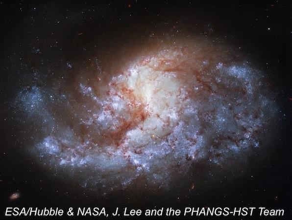
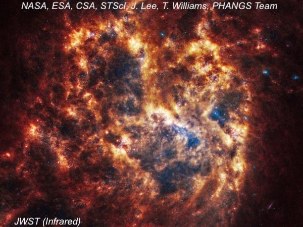

NGC 1385
- Name: NGC 1385 = ESO 482-016 = MCG -04-09-036 = LGG 097-013 = PGC 13368
- RA: 03h 37m 28.8
- Dec: -24° 30' 07" (J2000)
- Constellation: Fornax
- Type: SB(s)cd; HII
- Size: 3.4' x 2.0'
- Magnitude: V = 10.9, B = 11.5
- Surface Brightness: 12.9
NGC 1385 is a star-forming barred spiral located 50 to 60 million light-years away in the northeast corner of Fornax. Although classified as a barred spiral of type SB(s)cd in visible light, in infrared images from JWST it appears much more chaotic, as a SBdm or transitional Magellanic-type with an extensive filamentary gas and dust structure.
The galaxy spans roughly 80,000 l.y. and belongs to the NGC 1395 group (LGG 97), which comprises 31 galaxies, 20 of which have NGC or IC designations. The NGC 1395 group is a subgroup of the larger Eridanus cluster with up to 200 members.
William Herschel discovered NGC 1385 on 17 November 1784 and recorded it as "faint, but less bright than the last [NGC 1371], brighter in the middle, about 1.5' diameter." John Herschel was more generous in his description, calling it "bright, round, gradually pretty much brighter middle, 40" [diameter]." The galaxy is visible in a 6-inch and will start to show structure in a 12-inch. My earliest observation was in 1981 using an 8-inch at 100×. The galaxy was faint but easily seen and I noted a brighter core.

In 1994, I observed NGC 1385 again with a 17.5-inch and logged it as:
Fairly bright, slightly elongated N-S, 2.5' × 2.0', with an irregular appearance. A bright bar extended through the galaxy WNW-ESE, and it was surrounded by an irregular patchy halo more elongated N-S. Spiral structure was strongly suggested with a spiral arm on the NE side. The galaxy appeared unbalanced, with the portion north of the bar larger and brighter.
I also observed this prominent galaxy in 2019 through Jimi Lowrey's 48-inch at 610x:
Overall, NGC 1385 extended N-S, ~3.0' × 1.8', with a prominent thick bar running E-W through the center. A small, bright knot is close N of the W end of the bar. A brighter, elongated patch (probably a short section of a spiral arm) was easily seen extending north of the bar. Only the initial part of the southern arm attached to the W end of the bar was visible. The main, long spiral arm was rooted on the E end of the bar and stretched well north of the central region. Its surface brightness seemed irregular or patchy. The arm faded and was less defined as it curled clockwise and spread W on the N end of the halo. The southern portion of the halo was faint overall (due to dust) but displayed a semi-circular outline due to the very low surface brightness of the southern arm. PGC 788671 is a very small galaxy seen 3.5' S of NGC 1385.
While in the area, NGC 1367 (= NGC 1371) is another bright galaxy just 40' SW. And from there, head 1° SSW and you'll hit the striking "Robin's Egg" planetary nebula NGC 1360, which is larger than either of these two galaxies!
"Give it a go and let us know!
Good luck and great viewing!"
